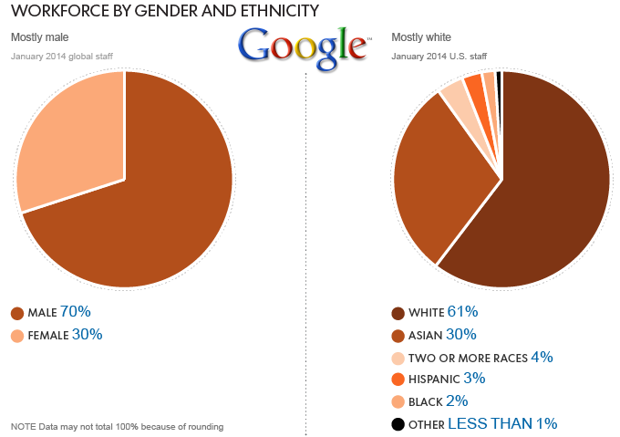

Silicon Valey's false promise of meritocracy
Week 4
"Brogrammer" culture, bias, and "pipeline problems"
October 10, 2014
In my opinion, lack of diversity among the tech workforce is without a doubt one of the most troubling issues facing the industry. The work of the tech field has changed the world for nearly every segment of society, but the workers who brought about these changes represent only a very small segment. Many tech leaders and workers are out of touch with the way most people live, and this insular outlook has repercussions for both tech and society as a whole. With the power of tech to shape the world, the industry needs to be more reflective of society or risk becoming a joke – or worse – an oligarchy.
Before we get into it, let’s take a minute to get angry. Have you heard about these emails? Or this statement? Or this app? Is your blood boiling yet? That’s only the tip of the iceberg. It seems like every week there's some new, utterly ignorant statement made by someone who really should know better. And I though behaviour like this and this was exclusive to knuckle-dragging Congressmen.
With the power that the tech industry has today, these examples represent a major problem for everyone. The way that most people communicate, work, and are entertained today is filtered through one type of technology or another. Tech has brought about huge upheavals and adjustments, from Twitter’s affect on protests and democracy (like in Egypt or Iran) to the reshaping of journalism through online news. Technology is now the delivery system for so much of our society and culture. But all this important content is filtered through the lens of only a small group of people – tech creators.
The creators of new technology shape their products and services through their worldview, which according to demographic data is the worldview of mostly young white men. The problems they deem important are often not priorities to the rest of the world. If the tech industry’s workforce was more diverse, tech creators might actually direct their energy to problems that affect a larger customer base – poverty, human rights, disease, or social problems. In essence, the tech field needs to be democratized in order to reflect and address the real world.

The insular “brogrammer” culture of tech is part of what is keeping differing opinions out of the field. While many people argue that Silicon Valley is a true meritocracy, there is plenty of evidence that it is not. Tech leaders need to look harder at their subtle biases and cultural norms that are off-putting to outsiders. The brogrammer culture may seem innocuous, but "small" instances add up and have direct effects on who gets hired or even aspires to a tech career in the first place. The people that make up the majority of tech companies are more likely to hire and network with people who fit seamlessly into this culture. And there are many qualified workers who would raise an eyebrow at events like this:
With the power that tech leaders have, they need be held to a very high standard. These offenses shouldn’t be written off to being “just part of the culture.” While it seems there should be an industry-wide effort to “address diversity,” the problem isn't a monolithic, far-off force. It happens on a personal level, and ignorance needs to be questioned directly. The people in power need to show sensitivity and willingness to listen. If they don’t, they shouldn’t be surprised when people stop paying attention to their companies and products. But with tech reaching nearly every part of our lives, it’s harder to simply ignore a few bad apples - we've all come to rely on these companies’ apps and services. In this way, the industry is so powerful that it risks becoming an oligarchy – when people feel like they can’t challenge the culture, they end up having to follow its lead. Thankfully, companies have recently begun to acknowledge their diversity problems.
Many argue that there is a “pipeline problem” in tech rather than a problem with hiring bias – that there aren’t enough candidates who are women, ethnic minorities, or sexual minorities. This “pipeline problem” seems to also be true, although it doesn’t mean bias should be overlooked. Lack of opportunity does keep many people out of tech. Tech skills simply aren’t easy to come by for many people, whether it’s because there’s a lack of access to technology or a lack of qualified people to teach tech skills. Anyone can learn to code, but not everyone has access to teachers and resources. Even “digital natives” who use new technologies so effectively are confused when it comes to how their devices work. Luckily, technology is quickly becoming more accessible. As computers become cheaper and more readily available to everyone, diversity in tech may eventually be only limited by people’s desire to learn tech skills. There are organizations like Women Who Code, Black Girls Code, CODE2040 and many other groups taking a hands-on approach to encourage new people into the field.
As cliché as it sounds, diversity benefits everyone. When everyone is able to have their hands on the reigns of power, we as a society will go further, faster. With the influence the tech industry has on the future, the diversity problem is a conversation that needs to happen now, no matter how uncomfortable it might make some people feel. Real understanding and listening takes time to cultivate, but the industry can’t afford to gloss over the problem any longer.